介護が必要な高齢者の自立した在宅復帰を支援する、病院と家庭の中間施設です。老人保健施設「山びこの郷」は診療所に併設されており、医療・看護・介護・リハビリテーションや栄養士などの専門スタッフがチームとなって、地域住民の健康や日常生活をサポートします。
長期入所・短期入所・通いの通所リハビリ（デイ・ケア）など、状況に合わせて利用できます。
| 通所リハビリ |
定員30人 |
|---|---|
| 入所サービス | 59床 |
個人の尊厳を重視した間取りで個室35室・2人部屋2室・4人部屋5室
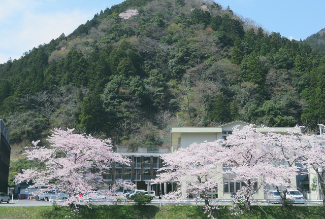
介護が必要な高齢者の自立した在宅復帰を支援する、病院と家庭の中間施設です。老人保健施設「山びこの郷」は診療所に併設されており、医療・看護・介護・リハビリテーションや栄養士などの専門スタッフがチームとなって、地域住民の健康や日常生活をサポートします。
長期入所・短期入所・通いの通所リハビリ（デイ・ケア）など、状況に合わせて利用できます。
| 通所リハビリ |
定員30人 |
|---|---|
| 入所サービス | 59床 |
個人の尊厳を重視した間取りで個室35室・2人部屋2室・4人部屋5室
揖斐川の豊かな自然のもと、美しい景色を眺められるゆったりした施設で、看護、介護サービスや慢性疾患の管理、医療サービスを提供します。ご自宅への復帰を目指して、医師による健康チェックや介護・看護・リハビリテーション、レクリエーション、行事活動、外出支援や家庭への訪問指導などを提供します。お一人おひとりの希望に沿った、終末期の看取りケアも行っています。
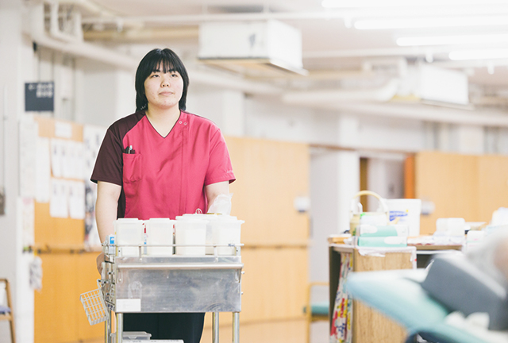
常にスタッフが常駐。診療所併設の施設なので夜間や緊急時のケアも安心です。
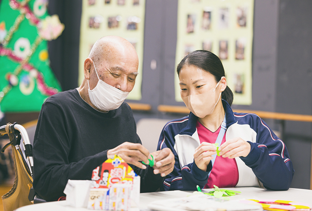
医師・看護師・介護士・支援相談員・理学療法士・作業療法士・言語聴覚士・管理栄養士などが総合的に在宅復帰プランを考えます。
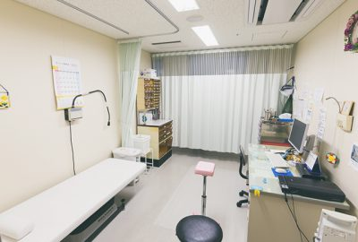
比較的症状が安定している方は、必要に応じて診察、投薬、検査、処置などの医療サービスが受けられます。
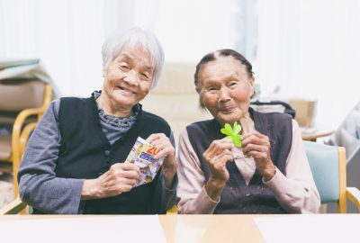
施設内での共同生活により、他の入所者との交流や友情が生まれます。
リハビリや行事、レクリエーション活動が充実しており、楽しみながら健康維持ができます。
要支援の方は利用できません
| 食事の支援 | 必要な栄養をバランスよく摂れる食事を提供し、食に対して楽しみを持てるよう支援します。 |
|---|---|
| 生活動作の自立 | 排泄、着替え、移動などの動作の自立を目指してケアを行います。 |
| 体調管理 | 胃ろう、酸素吸入、吸痰、床ずれなどの傷の処置、内服薬の管理を行います。 |
| 6:00 | 起床 |
|---|---|
| 7:45 | 朝食 |
| 8:30 | ラジオ体操 |
| 9:00 | 健康チェック（体温、脈拍、血圧測定）、排泄、水分補給 |
| 10:00 | 入浴（月曜・木曜: 器械浴、火曜・金曜: 一般浴） |
| 12:00 | 昼食 |
| 13:30 | レクリエーション |
|---|---|
| 15:00 | おやつ |
| 16:30 | 排泄 |
| 17:30 | 夕食 |
| 19:00 | 就寝準備 |
| 21:00 | 就寝 |
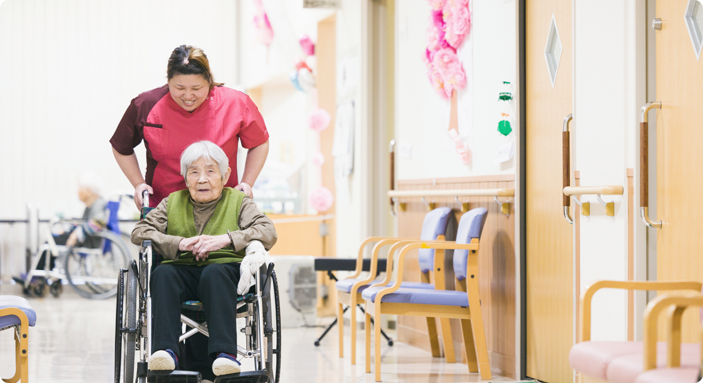
家庭での介護が一時的に困難になった時に、利用者さまが施設で過ごすサービスです。例えば、通常はご自宅で過ごされている利用者さまの病気が悪化して、医療的なケアが必要になった時や冠婚葬祭時、農繁期、家族の病気や介護疲れなどのタイミングでご利用ください。家族や介護者が一時的にリフレッシュできる機会を提供します。利用者さまは、入所の方と同一フロアで賑やかな雰囲気のなか過ごせます。なるべく生活リズムを崩さず、スムーズに家庭に戻れるよう支援します。
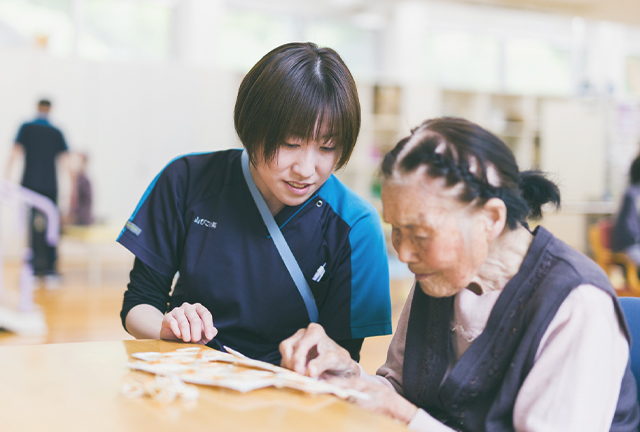
リハビリスタッフ（理学療法士、作業療法士、言語聴覚士）が、利用者さまの状態に合わせたリハビリ（20分以上）を提供します。
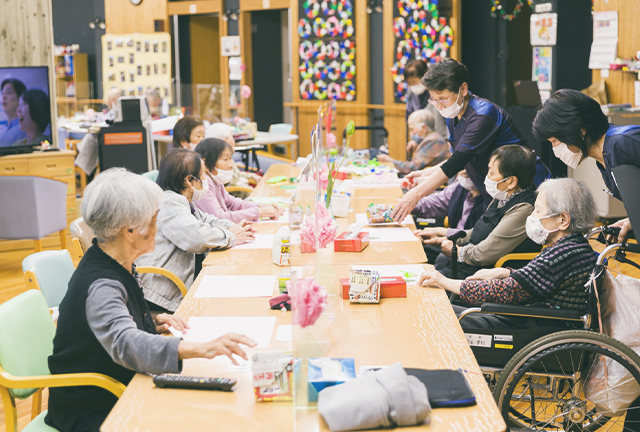
長期入所を検討する前に、施設のサービスや雰囲気を試すことができます。
| 個別リハビリテーション | 日常生活に必要な基本動作を行う機能の維持・回復をはかります。理学療法士、作業療法士が行います。 |
|---|---|
| 集団レクリエーション | 入所者同士の交流、楽しみや刺激のある生活を送っていきます。 |
短期入所では、利用者に合ったリハビリやケアが提供されます。以下に、一例を示します。
| 6:00 | 起床 |
|---|---|
| 7:45 | 朝食 |
| 8:30 | ラジオ体操 |
| 9:00 | 健康チェック（体温、脈拍、血圧測定）、排泄、水分補給 |
| 10:00 | 入浴（月曜・木曜: 器械浴、火曜・金曜: 一般浴） |
| 12:00 | 昼食 |
| 13:30 | レクリエーション |
|---|---|
| 15:00 | おやつ |
| 16:30 | 排泄 |
| 17:30 | 夕食 |
| 19:00 | 就寝準備 |
| 21:00 | 就寝 |
自宅で療養しているお年寄りに、通所で機能訓練、レクリエーション、入浴等のサービスをさせていただきます。医師の指示の下で疾患の管理や処置、生活機能の向上のためのリハビリテーションや、口腔・栄養などの専門的ケアを行い、日常生活の自立を支援。ご家族の介護負担を少しでも軽減できるように努めています。
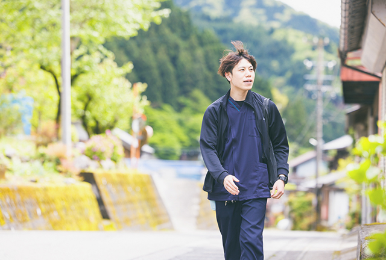
リハビリ専門職がご自宅を訪問し生活環境のアドバイスなどを行います。
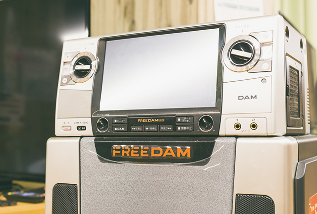
通信カラオケ機器DAMを導入しており、カラオケ、体操、レクリエーション、脳トレーニングなどを行います。
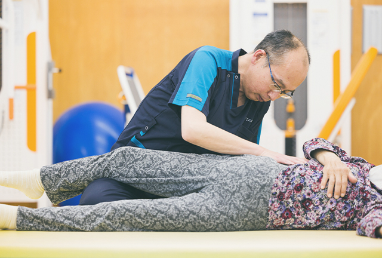
プロの専門家が作成する個別のリハビリプログラムにより、効果的なケアが受けられます。
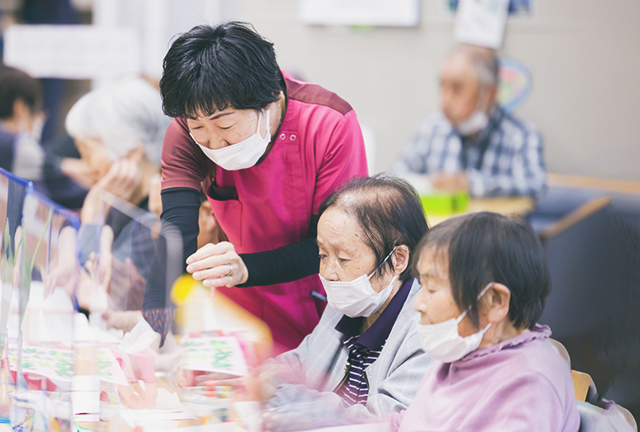
施設で他の通所者と交流し、情報交換や励まし合うことができます。
| 通所リハビリ全般 | リハビリ専門職（理学療法士、作業療法士、言語聴覚士）が、利用者さまに合わせたリハビリプログラムの作成と個別リハビリを提供。 また、生活リハビリとして、機器を使った自主トレーニングや脳トレーニング、作業活動なども行います。 |
|---|---|
| 理学療法 | 麻痺、筋力、関節、痛みなどの運動機能の障害や、起きる、座る、立つ、移る、歩くといった 基本的な動作に関してサポートします。 |
| 作業療法 | 排泄、食事、入浴、楽しみなど日常生活で必要となる生活行為や、 認知機能障害などの精神面に対してのリハビリを行います。 |
| 言語療法 | 「話す」「聞く」「読む」「書く」などコミュニケーションに関わる障害や、 食べること、飲み込むことの嚥下（えんげ）に関するリハビリを担当します。 |
| 送迎 | ご自宅から施設まで送迎を行います。福祉車両もございますので、車椅子のまま送迎することも可能です。 |
| 食事 | 利用者さまの食べやすい形態の食事を提供いたします。おやつの時間には、好きな飲み物をお選びください。 |
| 入浴 | 大浴場、個浴、椅子浴、寝浴などがあり、利用者さまの身体状況に合わせて安心して入浴することができます。 |
| アクティビティ （作業、レクなど） |
手芸、工作や野菜作り、囲碁、将棋など利用者さまの興味のある活動の提供や、 通信カラオケDAMを使ったレクリエーション、体操、カラオケなどを楽しめます。 |
老人保健施設「山びこの郷」の、心温まる施設内とお食事についてご紹介しています。
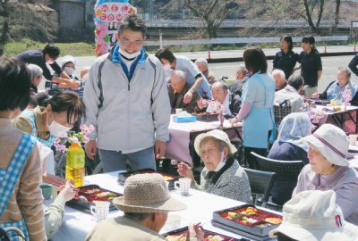
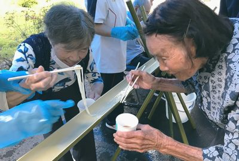
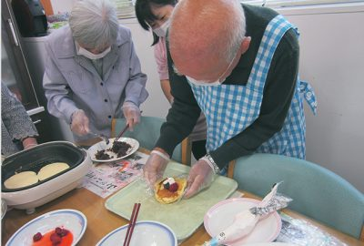
2022年から23年に実施したイベントを中心にご紹介します。下記以外にも、地域の方から寄付された里芋を職員と一緒に調理し芋煮を作って食べるなど、季節の食材を味わう機会が多いのも自然豊かな「山びこの郷」ならでは。
| 1月 | おせち料理 1〜3日はおせち料理、また1月は毎年お雑煮（やわらか福餅）を楽しみます。 |
|---|---|
| 2月 | 節分 「健康に過ごせますように」と願いを込めて豆まきを実施。 節分行事食（鍋、イワシ）や、おやつにはきなこ豆を提供します。 |
| 3月 | ひな祭り弁当 |
| 4月 | お花見会 2023年は3月中旬に満開の桜の前で記念撮影を行いました。 花見会当日は彩り豊かなお花見弁当をいただき、午後から桜のフォトフレームを作成。撮影した写真はお部屋に飾りました。 |
| 5月 | こどもの日献立、母の日献立 |
| 7月 | 七夕行事食、土用の丑の日（うなぎ） |
| 8月 | 夏祭り ここ数年はコロナ禍で規模を縮小して実施。 射的や魚釣りゲームをしたり、かき氷を食べたりして季節を感じていただきました。 |
| 9月 | 敬老会・敬老会お弁当 施設長より表彰状と記念品を贈呈。 昼食にはお赤飯や茶わん蒸し、エビフライなどが入った「敬老のお祝い膳」が振る舞われました。 |
| 12月 |
クリスマス会 年越しそば |
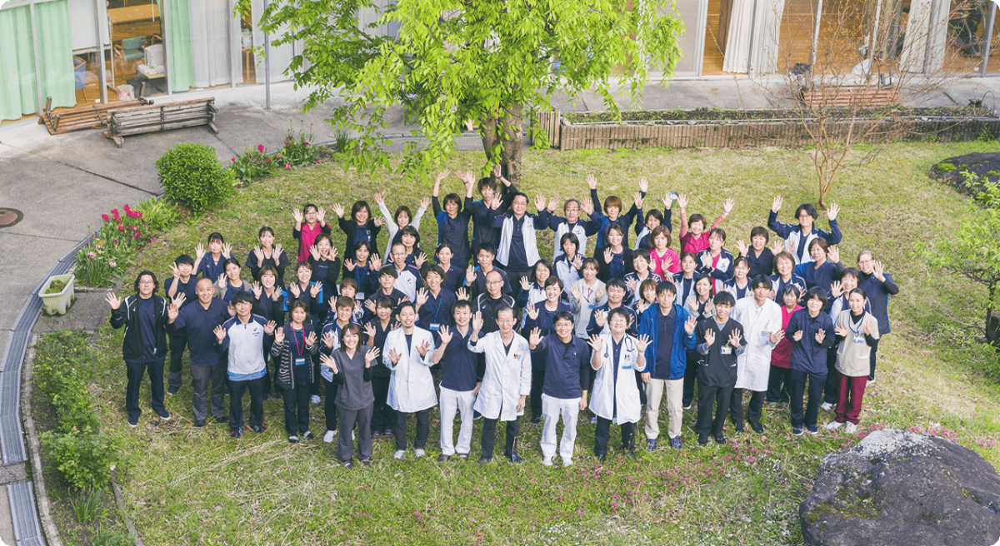
| 医師 | 6名 |
|---|---|
| 看護師 | 28名 |
| 介護士 | 27名 |
| ケアマネジャー | 2名 |
| 栄養士 | 3名 |
| 支援相談員 | 2名 |
|---|---|
| 事務員 | 10名 |
| ドライバー | 2名 |
| 理学療法士・作業療法士・言語聴覚士・薬剤師 | 9名 |
全て非常勤含む
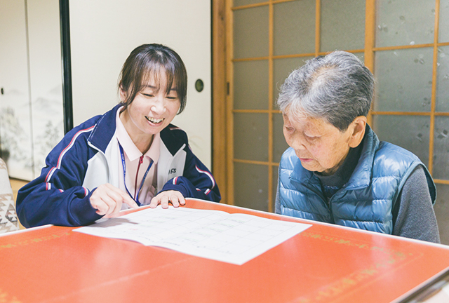
介護保険の要介護認定で要支援・要介護と認定された人やそのご家族からの相談を受けて、自立した日常生活が送れるようにサービス計画（ケアプラン）を作成します。適切なサービスを受けられるよう介護サービス事業者との連携、調整を行います。
利用者さま及びご家族の相談窓口を担います。施設サービスのご案内や、相談ごとはおまかせください。市町村との連携やボランティアの窓口としての業務などを行っております。
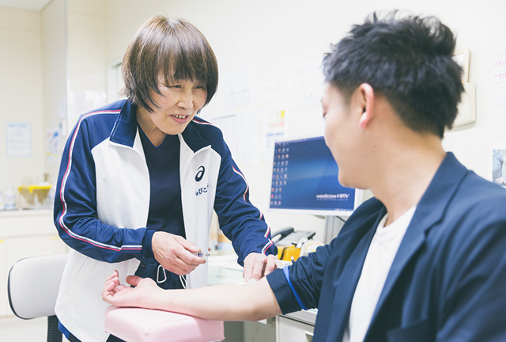
医師と連携して急変時においての対応や、日常生活全般について看護の面からサポート。また、糖尿病や高血圧等の慢性疾患の方、あるいは褥瘡(じょくそう)ケアの必要な方に、医療処置や管理を行います。
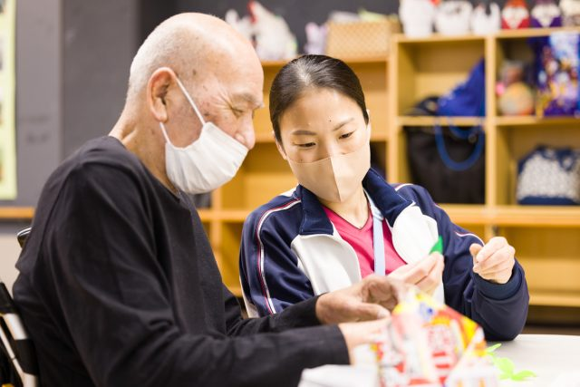
入浴、食事あるいは排泄等の日常生活全般の介護を担当します。利用者さまが持つ能力に応じて自立できるように支援し、暮らしが豊かになるレクリエーションを実施。利用者さまの一番近いところで生活全般に関わります。
“自分らしい生活”を取り戻せるように、利用者さまの状態にあわせた個別リハビリプログラムを作成。リハビリ専門職（理学療法士、作業療法士、言語聴覚士）を中心に多職種と連携してリハビリを提供します。
山びこの郷相談員までご連絡ください。
個別に相談に応じて、対応いたします。
感染症等の状況によりますが、面会や外出外泊については
事前に申し出ていただければ積極的に行っていただくことができます。
利用される方の介護度によって変わります。詳しくは担当者までお問い合わせください。
当施設ではボランティアの受け入れを積極的に行っています。
支援相談員が対応いたしますのでご相談ください。
当施設に対するご質問、ご要望がありましたらお電話やメールにてお問い合わせください。
支援相談員が対応いたします。お気軽におたずねください。
また、岐阜県社会福祉協議会のサイトにも詳しい情報を掲載しておりますので、ご確認ください。
日常生活上のお世話などはデイサービスと同じですが、通所リハビリ（デイ・ケア）ではリハビリ専門職、看護師、医師が常駐し、個別のリハビリや医療ケアを提供することができます。
デイ・ケアについては、久瀬地区、藤橋地区、谷汲地区（一部）、揖斐地区（一部）となります。
静養室に小上り畳、ベッドがあり横になって休むことができます。
フロア内にソファもありますので、ゆっくりくつろいでいただけます。
利用される方の介護度によっても変わります。詳しくは担当者までお問い合わせ下さい。
お迎えは朝の8時30分頃、お送りは15時30分頃です。
送迎ルートによって時間が異なる場合がございますので利用時にご連絡いたします。
土曜日、日曜日、祝日はお休みです。
主治医が久瀬診療所でない場合は、主治医からの診療情報提供書が必要となります。
持ち物に関しては契約時にご説明いたします。
{kind=link}